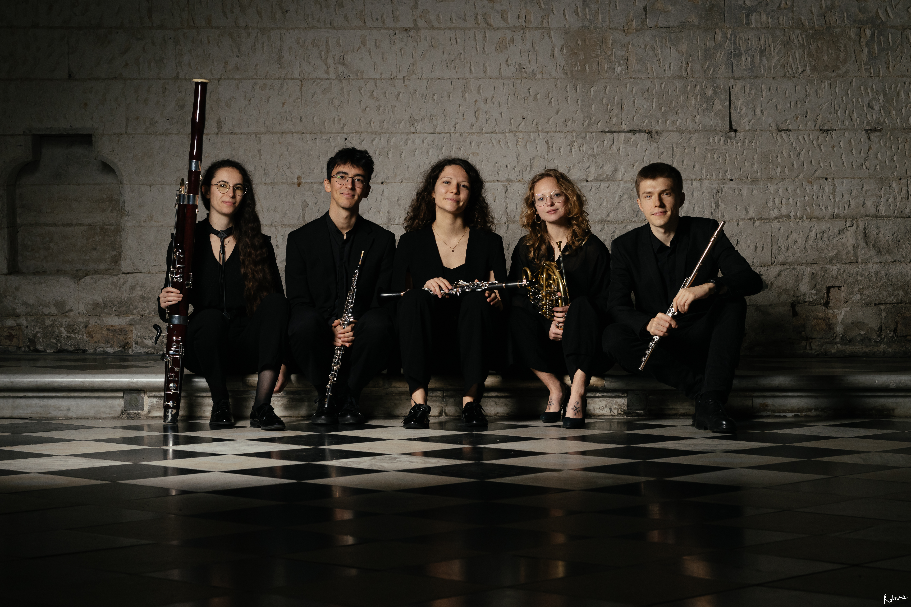

À la loupe
De Marais à Messiaen
Alternance de pièces solo et en quintette.
Marais, Bach, Ibert, Carrapatoso, Messiaen, Berio et Sciarrino

Quintette à vent — Paris
La linotte mélodieuse est un petit oiseau vif au chant riche et varié. Charmé·es par son nom évocateur et joyeux, nous lui avons emprunté sa version latine, Linaria.
Présentation
La linotte mélodieuse est un petit oiseau vif au chant riche et varié. Charmé·es par son nom évocateur et joyeux, nous lui avons emprunté sa version latine, Linaria.
Notre ensemble a vu le jour en 2023 dans les murs du CNSMD de Paris, suite à notre rencontre à l’Orchestre Français des Jeunes deux ans plus tôt. Tous diplômé·es de cet établissement dans nos instruments respectifs, nous avons également obtenu en quintette un DNSPM de musique de chambre en 2025.
Fervent défenseur du répertoire des XXe et XXIe siècles, notre ensemble à vent aime tout autant jouer ce répertoire existant que rencontrer et travailler avec des compositeurs et compositrices actuels. En 2025, nous avons eu le plaisir de collaborer avec Lucien Lacquement à la création de sa pièce La planète sauvage, inspirée du film de René Laloux.
Nous avons à cœur de rendre cette musique accessible au plus grand nombre, qu’il s’agisse de mélomanes avertis, d’une audience moins initiée ou de publics scolaires. Nous proposons d’accompagner nos concerts d’actions de médiation culturelle lorsque cela est possible.
Distribution
Répertoire
Durée : 1h environ
De Marais à Messiaen
Alternance de pièces solo et en quintette.
Marais, Bach, Ibert, Carrapatoso, Messiaen, Berio et Sciarrino
En concert
Dossier de diffusion complet disponible sur demande.
Diffusion
Vous êtes programmateur, directeur de festival ou curieux de découvrir nos projets ? N'hésitez pas à nous écrire pour recevoir notre plaquette artistique et nos disponibilités.